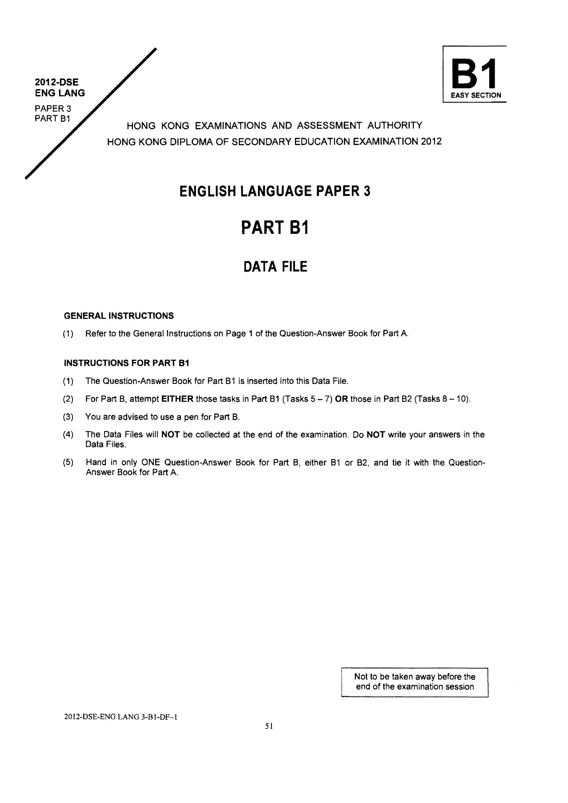

HONG KONG DIPLOMA OF SECONDARY EDUCATION EXAMINATION 2012
ENGLISH LANGUAGE PAPER 3
PART B1
DATA FILE
GENERAL INSTRUCTIONS
Refer to the General Instructions on Page 1 of the Question-Answer Book for Part A. (1)
INSTRUCTIONS FOR PART B1
(1) The Question-Answer Book for Part B1 is inserted into this Data File.
(2) For Part B, attempt EITHER those tasks in Part B1 (Tasks 5 — 7) OR those in Part B2 (Tasks 8 — 10). (3) You are advised to use a pen for Part B. (4) The Data Files will NOT be collected at the end of the examination. Do NOT write your answers in the Data Files.
Hand in only ONE Question-Answer Book for Part B, either B1 or B2, and tie it with the Question- (5) Answer Book for Part A.
Not to be taken away before the end of the examination session
2012-DSE-ENG LANG 3-B1-DF-1

原卷版面 · 圖表、照片及留白依原頁保留
中文對照
B1 2012-DSE 英朗 簡單部分 論文3 B1 部分 香港考試及評鑑局 2012年香港中學文憑考試 英語試卷 3 B1 部分 資料檔案 一般說明 請參閱 A 部分問答書第 1 頁的一般說明。 (1) B1 部分說明 (1) B1 部分的問答書插入此資料檔。 (2) 對於 B 部分，嘗試 B1 部分（任務 5 - 7）中的任務或 B2 部分（任務 8 - 10）中的任務。 (3) B 部分建議使用筆。 (4) 考試結束時不會收集資料檔。不要將您的答案寫在資料檔案中。 B 部分僅提交一本問答書（B1 或 B2），並將其與 A 部分的問題（5）答案書捆綁在一起。 考試結束前不得帶走 2012-DSE-ENG LANG 3-B1-DF-1
Data File · 原卷第 2 頁
可選取的英文文字
Part B
Situation
You are Nicky Leung. You work for Cultural Commons, which is a non-governmental organisation, an NGO, in Hong Kong. Cultural Commons helps people from different countries who come to live in Hong Kong. Your organisation is planning a Fun Day for a local community. Your boss, Manjula Pillai, has asked you to do some tasks.
You will listen to a recording of the weekly podcast programme Bookmark. In the podcast you will hear an interview with author Lionel Chan.
Before the recording is played, you will have five minutes to study the Question-Answer Book and the Data File for Part BI and the Question-Answer Book and the Data File for Part B2. Remember you must choose to do the tasks in either Part B] or Part B2. Do NOT attempt both Parts B1] and B2.
Complete the tasks by following the instructions in the Question-Answer Book that you choose and on the recording. You will find all the information you need in the Question-Answer Book and Data File that you choose and on the recording. As you listen you can make notes on page 3 of the Data File.
You will have five minutes to familiarize yourself with the Part B Question-Answer Book and the Data File.
Contents
Page
1. Listening note-taking sheet for podcast programme Bookmark — 3
2. Email from Manjula Pillai — 4
3. Minutes of Fun Day Planning Committee meeting — 5
4. Email from the Thai Ladies group oo — 6
5. Email from the Hong Kong Parks Department — 7 6. Book jacket of Lionel Chan’s b0OK — 8 7. Page from Booklore Website — 9
Listening note-taking sheet for podcast programme Bookmark Listen to the weekly podcast programme Bookmark, which features an interview with Lionel Chan. Take notes under the headings on the notesheet:
Fun Day details
Body lanquage
Lionel Chan
Communication barriers
Practical difficulties newcomers to Hong Kong face
To: Nicky Leung From: Manjula Pillai Sent: 31 March 2012
Subject: Things to do for Fun Day Dear Nicky
Could you please do the following three things for me?
We want to hand out some leaflets before the Fun Day to encourage people to come. I’ve designed a basic template for a leaflet but I need you to add in the details. Include: the place, date and time (in the top box) the activities the special guests (mention why they’re famous) our organisation name and phone number (in the bottom box)
Look at the minutes of the last Fun Day Planning Committee meeting and your notes from the Bookmark podcast.
I need the information about the Thai Ladies performance. Please send me an email with the information you’ve managed to find out, like:
how much time the dancers need and how many people they’re bringing what they need and if it’s available from the Hong Kong Parks Department any costs involved any possible problems
Finally, Lionel Chan is going to be one of our special guests at the Fun Day. Write a short descriptive paragraph about him to put on our website. Please include information about:
e his background and family e his current and previous jobs ° his new book
You should be able to get information from the book jacket of his latest book, the Booklore website and your notes from the Bookmark podcast.
1, Fun Day times It was decided that the Fun Day should start at 2 pm. EC advised that the event should finish by 6.30 as it would get dark then. All agreed.
2, Venue DK reported that the Fun Day would take place in the Chinese Garden in the park.
3. Cooking workshop and dance performance DK reported that a local Indian cooking group had agreed to hold a cooking workshop.
NL reported that a local group of Thai women called Thai Ladies had agreed to do a dance performance. Action agreed: NL to contact the Hong Kong Parks Department to ask about equipment available for the Fun Day and to ask the Thai Ladies what they will need on the day.
4, Other Fun Day activities The committee discussed other activities and agreed to encourage people to come in national dress. It was decided that it could be made a competition.
5. Special guests DK reported that Duleep Singh had confirmed he would be a special guest at the Fun Day. MP agreed that having a famous film star for the guest was good news.
6. Any other business No further points were raised.
To: Nicky Leung From: Buppha@tladies.com. Sent: 27 March 2012
Subject: Fun day dance
Dear Nicky
Thanks for meeting me last week.
We're delighted to be coming to the Fun Day. There will be 14 dancers and we’ll need about 25 - 30 minutes in total for the performance. We’ll also be bringing a few more people to help, probably three — four. So could you make sure we have enough space for all of us? Plus all of our dance costumes and bags?
We’ll need a stage so that people can see us and please make sure we have electricity available to play the music. We can provide a music system. It may be a good idea for you to provide some chairs for old people to sit down. I know that sometimes the Hong Kong Parks Department provide lights but we don’t need lights.
To: Nicky Leung From: bkparks@hkparks.hk. Sent: 28 March 2012
Subject: Re: Fun Day equipment enquiry
Dear Nicky
Thanks for your email about equipment. We can provide some different things free of charge for your Fun Day:
« A stage (capacity 10 people) e Tables ¢ Microphones « Outdoor lights
Please note that we can only provide one stage.
If you need further equipment, we can provide things such as chairs and generators for electricity. Please note that we will need to charge you 500 dollars deposit for up to 100 chairs and 150 dollars deposit for each electricity generator. You would need one generator for a music system and one for lights.
Please let me know what you need as soon as possible.
Regards Andrew Tse Hong Kong Parks Department
To: hkparks@hkparks.hk From: Nicky Leung Sent: 26 March 2012
Subject: Fun Day equipment enquiry
Dear Mr Tse
I represent an NGO called Cultural Commons. We promote cross cultural activities. This year Cultural Commons is holding a Fun Day in one of your parks. And there will be a dance performance. Please could you send me some details about the kind of equipment you have available for this kind of event? If you can include information about costs too, that would be very helpful.
Buog sjuesGiwwy ueyd |eu0l7 uy About the author Lionel Chan's “If you enjoy fifth book stories about people from continues different cultures where ‘The this is the book Panda, the for you.” Witch and the Merlion’ left off....we hope HK Express he can continue sharing his “Lets you see Lionel Chan has been a teacher for eight Hong Kong from experiences . the immigrant’s years. In his spare time away from his point of view” office at Kowloon University, he can be An Immigrant’s Song found deep sea fishing. hkread.com 8¢ Lionel Chan
ISBN : PB 0-916790-30-2 Comments from Reader Reviews
Loved it. Specially the stories about people from India, Colombia and Cameroon ;-). +: +’:
Lionel sends his daughter to our local school in Tai Po. His wife is from Sri Lanka. He writes about immigration because he lives it.
It’s a good book, we can learn about communication in Hong Kong from these stories! And did you know that he’s giving all the profits from the sales of this book to Cultural Commons? So buy it! or 1.2.7
This is not as interesting as his last book, Ta/k to me. | give it a two:
| think it’s a good book — it’s only $100 HK. Read it
THIS IS THE LAST PAGE OF THE PART B1 DATA FILE
Sources of materials used in this paper will be acknowledged in the Examination Report and Question Papers published by the Hong Kong Examinations and Assessment Authority at a later stage.
Candidate Number Please stick the barcode label here.
HKDSE 2012
ENGLISH LANGUAGE
PAPER 3 PART B1 Question-Answer Book EASY SECTION
Task 5: Leaflet (12 marks) Complete the template for a Jeaflet to be handed out at local shopping malls using information from the B1 Data File and your notes.
A chance for you to come and meet people from different cultures!
> Dance Performance by the 2 Thai Ladies Group 3 > iSpecial Guests Hee
Task 6: Email reply (18 marks) Write your reply email to Manjula Pillai about the Thai Ladies using information from the B] Data File. Write around 120 words.
To: Manjula Pillai From: Nicky Leung Sent: 31 March 2012
Task 7: Description for website (18 marks) Write a short description about Lionel Chan for the Cultural Commons website using information from the B1 Data File and your notes. Write around 150 words.